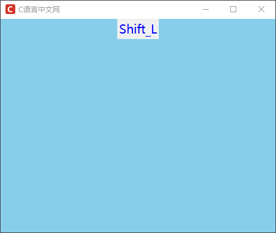
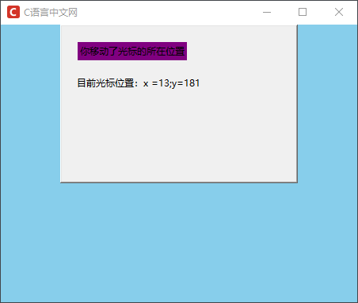

Tkinter Event事件处理
事件处理，是 GUI 程序中不可或缺的重要组成部分，相比来说，控件只是组成一台机器的零部件， 而事件处理则是驱动这台机器“正常”运转的关键所在，它能够将零部件之间“优雅”的贯穿起来，因此“事件处理”可谓是 GUI 程序的“灵魂”，同时它也是实现人机交互的关键。
注意：bind() 方法可以完成事件与处理函数绑定，而使用 unbind() 方法可以将事件与处理函数解绑。
这里有必要对经常使用的 modifier 修饰符做简单的介绍，修饰符可以修改事件的激活条件，比如双击鼠标或者需要同时按下某个键才触发事件，常用的修饰符如下：
下述表格中介绍了 Tkinter 中经常使用的事件类型，如下所示：
下面看一组关于“键盘事件”的使用示例：
对于“事件”这一名词，在讲解控件时也偶尔提及过，在本节我们将对 Tkinter 中的事件处理机制做更为详细的介绍。
在一款 GUI 程序中，我们将用户对软件的操作统称为“事件”，比如鼠标点击按钮、键盘输入文本以及窗口管理器触发的重绘事件等，这些事件有一个共同的特点，即都是由用户直接或者间接触发的。事件绑定方法
Tkinter 提供的事件处理机制允许我们为“控件”绑定相应的事件和事件处理函数（即 callback函数），从而实现控件与用户的交互，其语法格式如下：
widget.bind("<event>",func)
上述语法中，widget 代表控件的实例对象，之后，采用 bind() 方法进行事件绑定，该函数有两个参数：
- <event>：一个字符串参数，表示事件的类型，并使用“尖括号”的形式进行包裹；
- func：表示事件的处理函数（callback，即回调函数），当触发事件时，Tk 会携带事件对象（Event）去调用 func 方法。
注意：bind() 方法可以完成事件与处理函数绑定，而使用 unbind() 方法可以将事件与处理函数解绑。
常用事件类型
事件类型（也称事件码）是 Tkinter 模块规定的，主要包括鼠标、键盘、光标等相关事件，Tkinter 为其规定了相应的语法格式：<modifier-type-detail>上述语法由三部分组成，说明如下：
- <>：事件类型必须包含在“尖括号”内；
- modifier：可选项，事件类型的修饰符，通常用于描述组合键、双击<Double-Button-1>、大写锁定键<Lock>以及<Alt-Shift>等；
- type：是必不可少的一项，表示事件的具体类型；
- detail：可选项，通常用于描述具体的哪个按键，比如 <Button-1> 表示鼠标左键；
这里有必要对经常使用的 modifier 修饰符做简单的介绍，修饰符可以修改事件的激活条件，比如双击鼠标或者需要同时按下某个键才触发事件，常用的修饰符如下：
| 修饰符 | 说明 |
|---|---|
| Control | 事件发生时需按下 Control 键 |
| Alt | 事件发生时需按下 Alt 键 |
| Shift | 事件发生时需按下 Shift 键 |
| Lock | 事件发生时需处于大写锁定状态 |
| Double | 事件连续发生两次，比如双击鼠标 |
| Triple | 事件连续发生三次 |
| Quadruple | 事件连续发生四次 |
下述表格中介绍了 Tkinter 中经常使用的事件类型，如下所示：
| 事件码 | 说明 |
|---|---|
| <ButtonPress-1> | 单击鼠标左键，简写为<Button-1>，后面的数字可以是1/2/3，分别代表左键、中间滑轮、右键 |
| <ButtonRelease-1> | 释放鼠标左键，后面数字可以是1/2/3，分别代表释放左键、滑轮、右键 |
| <B1-Motion> | 按住鼠标左键移动，<B2-Motion>和<B3-Motion>分别表示按住鼠标滑轮移动、右键移动 |
| <MouseWheel> | 转动鼠标滑轮 |
| <Double-Button-1> | 双击鼠标左键 |
| <Enter> | 鼠标光标进入控件实例 |
| <Leave> | 鼠标光标离开控件实例 |
| <Key> | 按下键盘上的任意键 |
| <KeyPress-字母>/<KeyPress-数字> | 按下键盘上的某一个字母或者数字键 |
| <KeyRelease> | 释放键盘上的按键 |
| <Return> | 回车键，其他同类型键有<Shift>/<Tab>/<Control>/<Alt> |
| <Space> | 空格键 |
| <UP>/<Down>/<Left>/<Right> | 方向键 |
| <F1>...<F12> | 常用的功能键 |
| <Control-Alt> | 组合键，再比如<Control-Shift-KeyPress-T>，表示用户同时点击 Ctrl + Shift + T |
| <FocusIn> | 当控件获取焦点时候触发，比如鼠标点击输入控件输入内容，可以调用 focus_set() 方法使控件获得焦点 |
| <FocusOut> | 当控件失去焦点时激活，比如当鼠标离开输入框的时候 |
| <Configure > | 控件的发生改变的时候触发事件，比如调整了控件的大小等 |
| <Deactivate> | 当控件的状态从“激活”变为“未激活”时触发事件 |
| <Destroy> | 当控件被销毁的时候触发执行事件的函数 |
| <Expose> | 当窗口或组件的某部分不再被覆盖的时候触发事件 |
| <Visibility> | 当应用程序至少有一部分在屏幕中是可见状态时触发事件 |
Event事件对象
当事件触发后，Tkinter 会自动将事件对象交给回调函数进行下步的处理，Event 对象包含了以下常用属性：| 属性 | 说明 |
|---|---|
| widget | 发生事件的是哪一个控件 |
| x,y | 相对于窗口的左上角而言，当前鼠标的坐标位置 |
| x_root,y_root | 相对于屏幕的左上角而言，当前鼠标的坐标位置 |
| char | 用来显示所按键相对应的字符 |
| keysym | 按键名，比如 Control_L 表示左边的 Ctrl 按键 |
| keycode | 按键码，一个按键的数字编号，比如 Delete 按键码是107 |
| num | 1/2/3中的一个，表示点击了鼠标的哪个按键，按键分为左、中、右 |
| width,height | 控件的修改后的尺寸，对应着 <Configure>事件 |
| type | 事件类型 |
下面看一组关于“键盘事件”的使用示例：
from tkinter import *
# 定义事件函数，必须用event参数
def show_key(event):
# 查看触发事件的按钮
s=event.keysym
# 将其显示在按钮控件上
lb.config(text=s)
root=Tk()
root.config(bg='#87CEEB')
root.title("C语言中文网")
root.geometry('450x350+300+200')
root.iconbitmap('C:/Users/Administrator/Desktop/C语言中文网logo.ico')
# 添加一个按钮控件
lb=Label(root,text='请按键',fg='blue',font=('微软雅黑',15))
# 给按钮控件绑定事件，按下任意键，然后调用事件处理函数。注意，此处需要在英文状态下进行输入
lb.bind('<Key>',show_key)
# 设置按钮获取焦点
lb.focus_set()
lb.pack()
# 显示窗口
root.mainloop()
程序运行结果如下：

图1：Tkinter事件处理
图1：Tkinter事件处理
注意：在上述示例中，只有当 Label 控件获取焦点后才能接收键盘事件，因此在给控件绑定事件和回调函数后，需要使用 focus_set() 方法来获取焦点。
下面再看一组关于“鼠标事件”的相关示例：
# 定义事件函数
from tkinter import *
def handleMotion(event):
lb1['text'] = '你移动了光标的所在位置'
lb2['text'] = '目前光标位置：x ='+ str(event.x)+';y='+str(event.y)
print('光标当前位置',event.x,event.y)
# 创建主窗口
win = Tk()
win.config(bg='#87CEEB')
win.title("C语言中文网")
win.geometry('450x350+300+200')
win.iconbitmap('C:/Users/Administrator/Desktop/C语言中文网logo.ico')
# 创建一个窗体容器frame
frame = Frame (win, relief=RAISED, borderwidth=2, width=300,height=200)
frame.bind('<Motion>',handleMotion)
lb1 = Label(frame,text='没有任何事件触发', bg='purple', )
# 使用place进行位置布局，下一节会介绍
lb1.place (x=20,y=20)
lb2 = Label(frame,text='')
lb2.place (x=16,y=60)
frame.pack(side=TOP)
# 显示窗口
win.mainloop()
程序运行结果如下:

图2：Tkinter鼠标移动事件
图2：Tkinter鼠标移动事件
关注公众号「站长严长生」，在手机上阅读所有教程，随时随地都能学习。内含一款搜索神器，免费下载全网书籍和视频。

微信扫码关注公众号